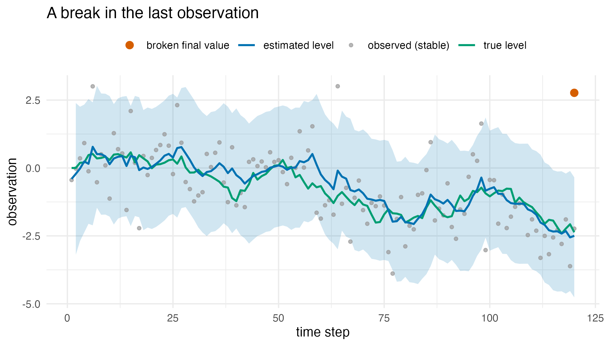
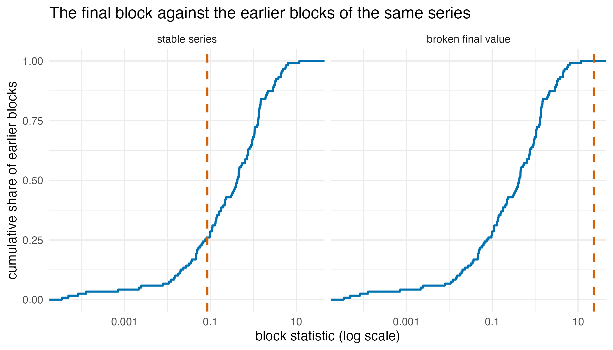

has_ggplot2 <- requireNamespace("ggplot2", quietly = TRUE)The problem
Suppose you follow a series over time, such as monthly sales, and you have a model fitted to every value so far. One new value has just arrived. You want to know whether it is consistent with the model, or whether something has changed.
Most tests for a change in a series need data on both sides of the change. The breakpoint test of Chow (1960) and the sup-Wald test of Andrews (1993), which tries every possible change point, estimate the model before and after a change and compare the two. With one new value, or a handful, the model after the change cannot be estimated. Chow (1960) also proposed a predictive test that works in this case, but it assumes that the errors follow a normal distribution (Andrews, 2003).
Andrews (2003) proposed end-of-sample tests for exactly this case. proxymix implements a version of them for state-space models. These models describe a series through an unobserved state, such as a level, that changes over time.
Package capabilities
-
gmm_filter()runs the Kalman filter, which tracks the unobserved state of a series one time step at a time. Before each new value arrives, the filter forecasts it. The difference between the value and its forecast is called the innovation. -
gmm_eos_test()tests whether the lastmvalues of a series are consistent with the model. It takes the model in the same form asgmm_filter(). It returns a p-value, a decision at the 5% level, and the numbers used to compute them.
The test statistic is built from the innovations. Each innovation is
divided by its standard deviation, which the filter also reports. If the
model is correct and nothing has changed, the result,
,
follows a standard normal distribution. The statistic adds up the
squares of the last m of them:
A change in the last m values makes their forecasts worse
and the statistic larger.
gmm_eos_test() offers two ways, or calibrations, of
turning the statistic into a p-value.
-
method = "chisq", the default, compares the statistic with a chi-square distribution, the distribution of a sum of squared standard normal values. Its degrees of freedom, the number of squared values in the sum, aremtimes the number of variables observed at each time step. The p-value is exact when the innovations are normal and the model’s parameters are known. -
method = "andrews"compares the statistic with the same statistic computed on every earlier block ofmconsecutive values of the series. The p-value is the share of blocks at least as large as the final block, counting the final block itself. Taking p-values from the data in this way is called subsampling. It follows the P-test of Andrews (2003), with two differences: the p-value counts the tested block, and the earlier blocks are computed from the supplied model rather than from a model re-estimated without each block.
The subsampling calibration does not assume normal innovations. It
does make other assumptions. Its p-value is valid only as the series
grows long with m fixed, and only if the innovations before
the tested block are stationary, meaning that their distribution does
not change over time. Its size in a short series can differ from nominal
in either direction: the discreteness of the p-value makes it
conservative at m = 1 with the model’s parameters known,
but it can reject too often when the blocks are no longer exchangeable,
such as with estimated parameters or the overlapping blocks of
m > 1.
Addressing the problem
set.seed(20260621)A model and a stable series
The model is a local-level model. An unobserved level moves as a
random walk, taking a small normal step at each time point. Each
observation is the level plus normal noise. In gmm_filter()
form, the prior gives the starting level, dynamics gives
the steps of the level, and measurement gives the noise of
the observations. gmm() builds a mixture of normal
distributions, and with weights = 1 it is a single normal
distribution. A prior variance of 10 means the starting level is known
only roughly.
prior <- gmm(weights = 1, means = list(0), covariances = list(matrix(10)))
dynamics <- list(A = matrix(1), Q = matrix(0.04)) # the level's random walk
measurement <- list(C = matrix(1), R = matrix(1)) # the observation noise
n <- 120L
level <- cumsum(c(0, rnorm(n - 1L, 0, sqrt(0.04))))
y_stable <- level + rnorm(n, 0, 1)The same series with a broken final value
A copy of the series has its final value moved up by five standard
deviations of the observation noise. Both series are tested at
m = 1 with the subsampling calibration.
y_break <- y_stable
y_break[n] <- y_break[n] + 5
test_stable <- gmm_eos_test(
prior, dynamics, measurement, y_stable, m = 1L, method = "andrews"
)
test_break <- gmm_eos_test(
prior, dynamics, measurement, y_break, m = 1L, method = "andrews"
)| Result | Stable series | Broken final value |
|---|---|---|
| statistic | 0.085 | 23.194 |
| p-value | 0.7417 | 0.0083 |
| reject at 0.05 | FALSE | TRUE |
| calibration | andrews | andrews |
| window m | 1 | 1 |
What the filter expected
The figure shows the forecasts behind the statistic. Before each value arrives, the filter forecasts it from the values before it. The shaded band spans two forecast standard deviations either side of each forecast. The statistic divides each innovation by this forecast standard deviation.
filtered <- gmm_filter(
prior, dynamics, measurement, y_stable, ridge_eps = 0
)
# ridge_eps adds a tiny amount to each covariance for numerical stability;
# 0 keeps the filter's recursion exact
path <- filtered$summary
# forecast of y_t and its standard deviation, from the filter at t - 1
pred_mean <- c(prior@means[[1L]], path$mean_1[-n])
pred_sd <- sqrt(c(prior@covariances[[1L]][1L, 1L], path$sd_1[-n]^2) +
dynamics$Q[1L, 1L] + measurement$R[1L, 1L])
outside <- sum(abs(y_stable - pred_mean)[-1L] > 2 * pred_sd[-1L])
series_df <- data.frame(
t = seq_len(n),
observed = y_stable,
truth = level,
filtered = path$mean_1,
lo = pred_mean - 2 * pred_sd,
hi = pred_mean + 2 * pred_sd
)
break_df <- data.frame(t = n, y = y_break[n])
ggplot2::ggplot(series_df, ggplot2::aes(t)) +
ggplot2::geom_ribbon(
data = series_df[-1L, ], ggplot2::aes(ymin = lo, ymax = hi),
fill = "#0072B2", alpha = 0.18
) +
ggplot2::geom_point(
ggplot2::aes(y = observed, colour = "observed (stable)"),
size = 1.1, alpha = 0.7
) +
ggplot2::geom_line(
ggplot2::aes(y = truth, colour = "true level"), linewidth = 0.8
) +
ggplot2::geom_line(
ggplot2::aes(y = filtered, colour = "estimated level"), linewidth = 0.8
) +
ggplot2::geom_point(
data = break_df, ggplot2::aes(t, y, colour = "broken final value"),
size = 2.6
) +
ggplot2::scale_colour_manual(
name = NULL,
values = c(
"observed (stable)" = "grey60",
"true level" = "#009E73",
"estimated level" = "#0072B2",
"broken final value" = "#D55E00"
)
) +
ggplot2::labs(
x = "time step", y = "observation",
title = "A break in the last observation"
) +
ggplot2::theme_minimal(base_size = 11) +
ggplot2::theme(legend.position = "top")
The simulated series, the unobserved level that generated it, the level estimated by the filter, and a band of two forecast standard deviations either side of each forecast. The band starts at the second time step. The broken final value lies far outside the band.
How the subsampling p-value is reached
The subsampling calibration ranks the final block among the earlier blocks of the same series. The next figure shows that ranking for both series.
blocks_df <- rbind(
data.frame(
block = test_stable$in_sample_blocks, series = "stable series"
),
data.frame(
block = test_break$in_sample_blocks, series = "broken final value"
)
)
blocks_df$series <- factor(
blocks_df$series, levels = c("stable series", "broken final value")
)
rule_df <- data.frame(
series = factor(
c("stable series", "broken final value"),
levels = c("stable series", "broken final value")
),
statistic = c(test_stable$statistic, test_break$statistic)
)
ggplot2::ggplot(blocks_df, ggplot2::aes(block)) +
ggplot2::stat_ecdf(geom = "step", linewidth = 0.8, colour = "#0072B2") +
ggplot2::geom_vline(
data = rule_df, ggplot2::aes(xintercept = statistic),
colour = "#D55E00", linetype = "dashed", linewidth = 0.8
) +
ggplot2::facet_wrap(~ series) +
ggplot2::scale_x_log10(labels = function(v) {
format(v, scientific = FALSE, drop0trailing = TRUE, trim = TRUE)
}) +
ggplot2::labs(
x = "block statistic (log scale)",
y = "cumulative share of earlier blocks",
title = "The final block against the earlier blocks of the same series"
) +
ggplot2::theme_minimal(base_size = 11)
The cumulative distribution of the earlier block statistics in each series, with the final block’s statistic as a dashed line. The p-value is , where is the number of earlier blocks at or beyond the dashed line. The stable series’ final block lies inside the range of earlier blocks. The broken series’ final block lies beyond every earlier block.
How often each calibration rejects when the model is known
The size of a test is how often it rejects when nothing has changed. A test at the 5% level should have a size of 0.05. The chunk below simulates stable series of 30 values from the same model, tests each one, and records the share of p-values below 0.05. The model’s parameters are known here, as in the example above.
simulate_null <- function(n_obs) {
lv <- cumsum(c(0, rnorm(n_obs - 1L, 0, sqrt(0.04))))
lv + rnorm(n_obs, 0, 1)
}
empirical_size <- function(n_obs, method, n_rep) {
p <- vapply(seq_len(n_rep), function(i1) {
gmm_eos_test(
prior, dynamics, measurement, simulate_null(n_obs),
m = 1L, method = method
)$p_value
}, numeric(1L))
size <- mean(p < 0.05)
c(size = size, se = sqrt(size * (1 - size) / n_rep))
}
n_rep <- 250L
size_chisq_30 <- empirical_size(30L, "chisq", n_rep)
size_andrews_30 <- empirical_size(30L, "andrews", n_rep)The subsampling p-value can take only the values for . Its smallest value is therefore . If the final block is equally likely to take any rank among the blocks, its size is the share of those values below 0.05. This holds at with known parameters, apart from the first few innovations, which the rough starting level affects. It does not hold when the parameters are estimated or when .
grid_size <- function(n_obs, m = 1L, alpha = 0.05) {
n_block <- n_obs - 2L * m + 1L
p_grid <- (1L + seq.int(0L, n_block)) / (1L + n_block)
mean(p_grid < alpha)
}
grid_30 <- grid_size(30L)
grid_120 <- grid_size(120L)| Calibration | Series length | Obtained | Size | Standard error |
|---|---|---|---|---|
| chi-square | 30 | simulated | 0.0640 | 0.0155 |
| subsampling | 30 | simulated | 0.0320 | 0.0111 |
| subsampling | 30 | from the p-value grid | 0.0333 | – |
| subsampling | 120 | from the p-value grid | 0.0417 | – |
Comparison with strucchange, changepoint, KFAS and dlm
In practice the model’s parameters are estimated from the same series
that is tested. A simulation compared the two calibrations with six
other checks in this setting. Each of 1000 series had 100 values from an
autoregressive model, in which each value is 0.6 times the previous one
plus standard normal noise. Every check was applied at
= 1, 3 and 5, where it is defined. proxymix’s two calibrations, KFAS,
dlm and the t-test were fitted to all but the last
values and then tested against those values; the
strucchange and cpt.mean() checks below
instead ran on the whole series. The power is how often a check rejected
when the last
values were raised by 3 noise standard deviations. The size is how often
it rejected when they were not.
The other checks were the sup-F test and the OLS-CUSUM test of
strucchange (Zeileis et al., 2002), cpt.mean()
of changepoint (Killick and Eckley, 2014), and a t-test on
the forecast errors of the last
values. The sup-F test looks for a change near the end of the series in
the regression of each value on the previous one. The OLS-CUSUM test
looks for drift, over the whole series, in the cumulative sum of the
errors of that regression. cpt.mean() searches for changes
in the mean, and it counts as rejecting when it places a change among
the last
values. KFAS (Helske, 2017) and dlm (Petris,
2010) each fitted their own autoregressive model and checked every
tested value against its 95% forecast interval. Each interval had a
level of
,
which splits the 5% error rate evenly over the
values (a Bonferroni correction). The check then has a size of at most
0.05 when the parameters are known.
| Check | Size, m = 1 | Power, m = 1 | Size, m = 5 | Power, m = 5 |
|---|---|---|---|---|
| proxymix, chi-square (default) | 0.068 | 0.834 | 0.070 | 0.852 |
| proxymix, subsampling | 0.049 | 0.798 | 0.073 | 0.830 |
| strucchange, sup-F | – | – | 0.038 | 0.810 |
| strucchange, OLS-CUSUM | 0.018 | 0.021 | 0.018 | 0.014 |
| changepoint, cpt.mean() | 0.001 | 0.088 | 0.018 | 0.645 |
| KFAS, forecast interval | 0.090 | 0.836 | 0.090 | 0.777 |
| dlm, forecast interval | 0.069 | 0.830 | 0.070 | 0.782 |
| t-test on forecast errors | – | – | 0.269 | 0.972 |
At a single final value, only the subsampling calibration had a size
close to 0.05, at 0.049. The default chi-square calibration had a size
of 0.068, close to that of dlm (0.069), and that of
KFAS was 0.090. All three treat the estimated parameters as
if they were known. Of these four forecast checks, the subsampling
calibration had the lowest power, 0.798 against 0.834 for the chi-square
calibration, 0.836 for KFAS and 0.830 for dlm.
At
neither calibration held its size (0.070 and 0.073), and the sup-F test
came closer, at 0.038. Its power was 0.810, against 0.852 for the
chi-square calibration. At
,
a column the table omits, the sup-F test had a size of 0.237, far above
0.05. The OLS-CUSUM test and cpt.mean() rejected fewer than
5% of stable series. The OLS-CUSUM test rarely detected a change
confined to the last few values, with a power of 0.021 at
and 0.014 at
.
cpt.mean() detected it in 0.088 of series at
and 0.645 at
.
proxymix was the slowest of the five packages. For one series at
= 3, the two proxymix calibrations together took 85 ms, including the
arima() fit that supplies the parameters. KFAS
took 33 ms and dlm 10 ms, each including its own fit.
strucchange and changepoint each took less
than 1 ms (median of five runs of 10 calls each, on one computer).
The code below applies every check to one simulated series with
m = 3. It is the simulation code for a single series. It
needs strucchange, changepoint,
KFAS and dlm, all on CRAN, and it is not run
when this vignette is built.
library(proxymix)
library(strucchange)
library(changepoint)
library(KFAS)
library(dlm)
# one series of 100 values whose last m values are raised by 3
set.seed(1L)
n <- 100L
m <- 3L
y <- as.numeric(arima.sim(list(ar = 0.6), n = n))
y[(n - m + 1L):n] <- y[(n - m + 1L):n] + 3
y_fit <- y[seq_len(n - m)]
last <- (n - m + 1L):n
# proxymix, with the autoregressive model fitted by arima()
ar <- arima(y_fit, order = c(1L, 0L, 0L))
a1 <- coef(ar)[["ar1"]]
mu <- coef(ar)[["intercept"]]
s2 <- ar$sigma2
prior <- gmm(weights = 1, means = list(mu),
covariances = list(matrix(s2 / (1 - a1^2))))
dynamics <- list(A = matrix(a1), b = mu * (1 - a1), Q = matrix(s2))
measurement <- list(C = matrix(1), R = matrix(0))
p_chisq <- gmm_eos_test(prior, dynamics, measurement, y, m = m,
method = "chisq")$p_value
p_andrews <- gmm_eos_test(prior, dynamics, measurement, y, m = m,
method = "andrews")$p_value
resid <- y[last] - predict(ar, n.ahead = m)$pred
p_t <- if (m > 1L) t.test(resid)$p.value else NA_real_
# strucchange needs at least three observations after a break in an AR(1)
reg <- data.frame(y = y[-1L], y_lag = y[-n])
n_reg <- nrow(reg)
p_supf <- if (m >= 3L) {
fs <- Fstats(y ~ y_lag, data = reg, from = n_reg - m, to = n_reg - 3L)
unname(sctest(fs)$p.value)
} else NA_real_
p_cusum <- unname(sctest(efp(y ~ y_lag, data = reg,
type = "OLS-CUSUM"))$p.value)
cp <- cpts(cpt.mean(y / sd(y_fit)))
p_cpt <- if (any(cp >= n - m)) 0 else 1
y_bar <- mean(y_fit)
kfas_update <- function(pars, model) {
part <- SSMarima(ar = 0.999 * tanh(pars[1L]), Q = exp(pars[2L]))
model["T", "arima"] <- part$T
model["R", "arima"] <- part$R
model["Q", "arima"] <- part$Q
model["P1", "arima"] <- part$P1
model
}
kfas_fit <- fitSSM(
SSModel(I(y_fit - y_bar) ~ -1 + SSMarima(ar = 0.5, Q = 1), H = 0),
inits = c(0, 0), updatefn = kfas_update, method = "BFGS"
)
kfas_par <- kfas_fit$optim.out$par
kfas_model <- SSModel(
I(y - y_bar) ~ -1 + SSMarima(ar = 0.999 * tanh(kfas_par[1L]),
Q = exp(kfas_par[2L])),
H = 0
)
kfas_pred <- predict(kfas_model, interval = "prediction", level = 0.95,
filtered = TRUE)
kfas_z <- (y[last] - y_bar - kfas_pred[last, "fit"]) /
((kfas_pred[last, "upr"] - kfas_pred[last, "lwr"]) / (2 * qnorm(0.975)))
p_kfas <- min(1, m * 2 * pnorm(-max(abs(kfas_z))))
dlm_build <- function(pars) {
dlmModARMA(ar = 0.999 * tanh(pars[1L]), sigma2 = exp(pars[2L]), dV = 0)
}
dlm_fit <- dlmMLE(y_fit - y_bar, parm = c(0, 0), build = dlm_build)
dlm_filt <- dlmFilter(y - y_bar, dlm_build(dlm_fit$par))
dlm_var <- unlist(dlmSvd2var(dlm_filt$U.R, dlm_filt$D.R))
dlm_z <- (y[last] - y_bar - dlm_filt$f[last]) / sqrt(dlm_var[last])
p_dlm <- min(1, m * 2 * pnorm(-max(abs(dlm_z))))
c("proxymix chi-square" = p_chisq, "proxymix subsampling" = p_andrews,
"strucchange sup-F" = p_supf, "strucchange OLS-CUSUM" = p_cusum,
"changepoint cpt.mean" = p_cpt, "KFAS forecast interval" = p_kfas,
"dlm forecast interval" = p_dlm, "t-test on forecast residuals" = p_t)The extended version of this article gives the full simulation, explains each check’s size in detail, and applies all eight checks to the Nile river flow series, which changed level after 1898.
Interpretation
On the stable series the statistic is 0.085, with a subsampling p-value of 0.742. The test does not reject, because the last value lies where the filter expected it. Moving that value up by five noise standard deviations raises the statistic to 23.2 and lowers the p-value to 0.0083. The test rejects.
In the first figure the broken value lies 4.8 forecast standard deviations from its forecast. The square of that distance is the statistic. This distance differs from five for two reasons. The forecast standard deviation is larger than the noise standard deviation, because it also includes the step of the level and the filter’s uncertainty about the level. The stable value was also not exactly at its forecast. Of the 119 stable values from the second time step on, 8 (6.7 per cent) fall outside the band. Under the model, a band of two standard deviations leaves out about 4.6 per cent. In the second figure the broken value’s statistic is larger than every one of the 119 earlier block statistics. Its p-value is therefore the smallest possible, .
That smallest p-value limits the subsampling calibration on short series. At and it is , so the test rejects at the 5% level only when the last value is the most extreme of the series. Its size with known parameters is then 0.0333 rather than 0.05. The simulated size, 0.032 with a standard error of 0.011, agrees with this value. The chi-square calibration has no smallest p-value. Its simulated size at is 0.064 with a standard error of 0.015, which is not detectably different from 0.05.
Which calibration to use depends on whether the parameters are known.
With known parameters, the default method = "chisq" is
exact when the noise is normal. The parameters are usually estimated
from the series being tested. The comparison above used the default in
that setting. At a single final value its size was 0.068 rather than
0.05. For a single final value with estimated parameters, use
method = "andrews". It was the only check in the comparison
whose size stayed close to 0.05, and it detected the change slightly
less often. It needs a series long enough that
is well below 0.05. For windows of 3 or 5 values, neither calibration
held its size in the comparison. At
their sizes were 0.064 and 0.062.
Limitations
The size study in this article uses 250 series per calibration. A size near 0.05 then has a standard error of about 0.014, so it cannot detect a departure from 0.05 of one or two percentage points.
The simulations use normal noise throughout. The subsampling calibration does not assume normal noise, and the chi-square calibration does. Neither this article nor its extended version tests how the two calibrations behave when the noise has heavier tails than the normal. The comparison covers one autoregressive model, one series length, one size of change and a change confined to the tested values. It does not cover smaller or gradual changes, longer windows or other models.
The test applies to a linear state-space model with normal noise,
given in the same form as for gmm_filter(): a
single-component gmm prior, a dynamics list
and a measurement list. Process or measurement noise given
as a mixture of normal distributions is rejected, because neither
calibration is defined for it. The window m must be smaller
than the series length, and the test is designed for small windows such
as 1, 2 or 3.
The test checks the last values against the model. It does not check the model. If the noise variances are estimated from the same short series and come out too small, the test rejects too often.
Further reading
The closed-form operator calculus on a mixture explains the
forecast and update steps that gmm_filter() and this test
run, and covers the Kalman filter in more detail.
Reading the entropy of a fitted mixture covers summaries of a fitted mixture once it is in hand.
Fitting a proxy to a density you cannot sample introduces the package’s main task, fitting a mixture of normal distributions to a density.
References
Andrews, D. W. K. (1993). Tests for parameter instability and structural change with unknown change point. Econometrica 61(4), 821–856. https://doi.org/10.2307/2951764.
Andrews, D. W. K. (2003). End-of-sample instability tests. Econometrica 71(6), 1661–1694. https://doi.org/10.1111/1468-0262.00466.
Chow, G. C. (1960). Tests of equality between sets of coefficients in two linear regressions. Econometrica 28(3), 591–605. https://doi.org/10.2307/1910133.
Helske, J. (2017). KFAS: Exponential family state space models in R. Journal of Statistical Software 78(10), 1–39. https://doi.org/10.18637/jss.v078.i10.
Killick, R. and Eckley, I. A. (2014). changepoint: An R package for changepoint analysis. Journal of Statistical Software 58(3), 1–19. https://doi.org/10.18637/jss.v058.i03.
Petris, G. (2010). An R package for dynamic linear models. Journal of Statistical Software 36(12), 1–16. https://doi.org/10.18637/jss.v036.i12.
Zeileis, A., Leisch, F., Hornik, K. and Kleiber, C. (2002). strucchange: An R package for testing for structural change in linear regression models. Journal of Statistical Software 7(2), 1–38. https://doi.org/10.18637/jss.v007.i02.
Reproduce
Running the code with set.seed(20260621), as above,
reproduces the example, the figures and the size study exactly. The
comparison is read from stored results of a simulation run under
proxymix 0.16.0, strucchange 1.6-0, changepoint 2.3, KFAS 1.6.0 and dlm
1.1-6.1, which took about 18 minutes on one core.
#> R version 4.6.1 (2026-06-24)
#> Platform: aarch64-apple-darwin23
#> Running under: macOS Tahoe 26.6.2
#>
#> Matrix products: default
#> BLAS: /Library/Frameworks/R.framework/Versions/4.6/Resources/lib/libRblas.0.dylib
#> LAPACK: /Library/Frameworks/R.framework/Versions/4.6/Resources/lib/libRlapack.dylib; LAPACK version 3.12.1
#>
#> locale:
#> [1] en_AU.UTF-8/en_AU.UTF-8/en_AU.UTF-8/C/en_AU.UTF-8/en_AU.UTF-8
#>
#> time zone: Australia/Adelaide
#> tzcode source: internal
#>
#> attached base packages:
#> [1] stats graphics grDevices utils datasets methods base
#>
#> other attached packages:
#> [1] proxymix_0.16.0
#>
#> loaded via a namespace (and not attached):
#> [1] mvnfast_0.2.8 gtable_0.3.6 jsonlite_2.0.0 dplyr_1.2.1
#> [5] compiler_4.6.1 Rcpp_1.1.2 tidyselect_1.2.1 dichromat_2.0-1
#> [9] jquerylib_0.1.4 systemfonts_1.3.2 scales_1.4.0 textshaping_1.0.5
#> [13] yaml_2.3.12 fastmap_1.2.0 ggplot2_4.0.3 R6_2.6.1
#> [17] labeling_0.4.3 generics_0.1.4 knitr_1.51 htmlwidgets_1.6.4
#> [21] tibble_3.3.1 desc_1.4.3 bslib_0.12.0 pillar_1.11.1
#> [25] RColorBrewer_1.1-3 rlang_1.3.0 cachem_1.1.0 xfun_0.60
#> [29] fs_2.1.0 sass_0.4.10 S7_0.2.2 otel_0.2.0
#> [33] cli_3.6.6 withr_3.0.3 pkgdown_2.2.1 magrittr_2.0.5
#> [37] digest_0.6.39 grid_4.6.1 lifecycle_1.0.5 vctrs_0.7.3
#> [41] evaluate_1.0.5 glue_1.8.1 farver_2.1.2 ragg_1.5.2
#> [45] rmarkdown_2.32 tools_4.6.1 pkgconfig_2.0.3 htmltools_0.5.9